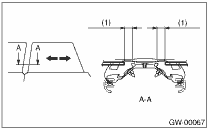
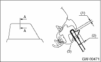

GLASS/WINDOWS/MIRRORS > Rear Door Glass
NOTE:
The rear door glass, as a rule, is adjusted in the same manner as front glass, although they are different in dimension.
1. Adjust the glass position using the following dimensions as a guide line. (Difference up and down: Within 1.5 mm (0.059 in))

|
(1) |
12±1 mm (0.472±0.039 in) |
NOTE:
• If dimensions are smaller than the given dimensions, glass may get caught in weather strip during lifting/lowering operation and may not be fully open.
• After adjustment, move the glass up and down to check whether it is caught.
2. Attach the special tool to the glass, and adjust the glass adhesion until the dimensional value becomes as shown below.
| ST 61299AE000 | SPACER (GLASS THICKNESS: 5 mm (0.197 in) for door glass) |

|
(1) |
2.2 — 3.8 mm (0.087 — 0.15 in) |
|
(2) |
When the weather strip is reused: 8.5 — 10.5 mm (0.335 — 0.413 in) When the weather strip is replaced: 7.5 — 9.5 mm (0.295 — 0.374 in) |
|
(3) |
ST |
NOTE:
• If rear glass adhesion is higher than necessary, glass may get caught in weather strip of center pillar corner, resulting in early wear of weather strip. Care should be taken for adjustment.
• After adjustment, move the glass up and down to check whether it is caught.